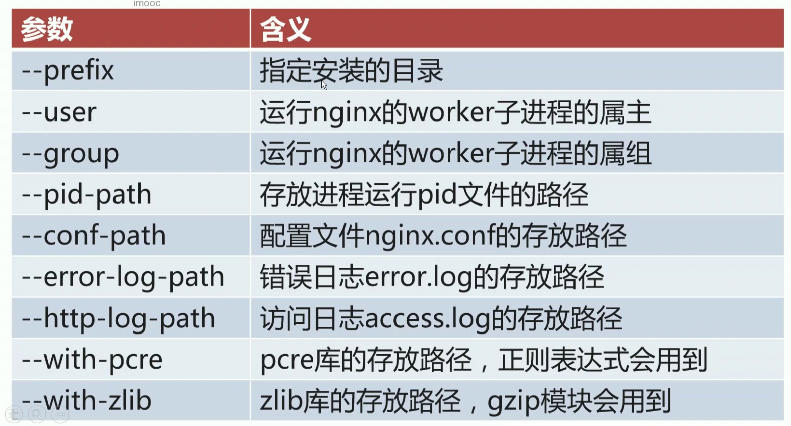

学习备注
总结出自己的思维脑图
前言
- 学习了慕课网的《新版Nginx体系化深度精讲，从青铜到王者的飞跃》课程，本篇文章是学习笔记。以便温习
初识Nginx
学习Nginx的三个理由
- 应用广泛，大厂和小厂必用的WEB组件
- 前后端、运维必知必会技能之一
- 性能优化，进阶高级工程师
学习后收获
部署前端项目，反向代理nodejs
反向代理java、python等，负载均衡
协调前后端，故障排查，性能优化
Nginx概念
Nginx* (engine x) 是一个高性能的HTTP和反向代理web服务器，同时也提供了IMAP/POP3/SMTP服务。Nginx是由伊戈尔·赛索耶夫为俄罗斯访问量第二的Rambler.ru站点（俄文：Рамблер）开发的，第一个公开版本0.1.0发布于2004年10月4日。
其将源代码以类BSD许可证的形式发布，因它的稳定性、丰富的功能集、示例配置文件和低系统资源的消耗而闻名。2011年6月1日，nginx 1.0.4发布。
Nginx是一款轻量级的Web 服务器/反向代理服务器及电子邮件（IMAP/POP3）代理服务器，在BSD-like 协议下发行。其特点是占有内存少，并发能力强，事实上nginx的并发能力在同类型的网页服务器中表现较好，中国大陆使用nginx网站用户有：百度、京东、新浪、网易、腾讯、淘宝等。
Nginx为什么出现并如此流行
- 互联网数据的快速增长
- Apache请求处理的低效性
Nginx相较于Apache的优势
| Apache | Nginx |
|---|---|
| 一个进程处理一个请求 | 一个进程处理多个请求 |
| 阻塞式的 | 非阻塞式的 |
Nginx处理请求过程

三个常见应用场景
- 静态资源服务
- 反向代理服务
- API服务
优势特点
- 高并发、高性能
- 扩展性好
- 异步非阻塞的事件驱动模型
简单安装
- linux环境准备
Centos7
1 | yum install epel-release -y |
Linux信号量
1 | # 列出linux所有信号量 |
利用信号量管理Nginx进程
- Master进程
- Woker进程
- 命令行
Nginx会监测当前环境有几个cpu，就会启动几个woker进程（当nginx.conf 的 worker_processes 配置为
auto时，即没有指定worker_processes的数量时），每个worker进程都会绑定到一颗cpu上
1 | # 查看linux cpu 相关信息 |
reload重载配置文件的流程
- 向master进程发送HUP信号（reload命令）
- master进程检查配置语法是否正确
- master进程打开监听端口
- master进程使用新的配置文件启动新的worker子进程
- master进程向老的woker子进程发送QUIT信号
- 旧的work进程关闭监听句柄，处理完当前连接后关闭进程
Nginx热部署
- 将旧的Nginx文件替换成新的Nginx文件
- 向mstaer进程发送USR2信号
- master进程修改pid文件，加后缀.oldbin
- master进程用新nginx文件启动新master进程
- 向旧的master进程发送WINCH信号，旧的worker子进程退出
- 回滚情形：向旧master发送HUP，向新的master发送QUIT

- Nginx热部署演示
1 | [root@sorozy run]# ps -ef | grep nginx |
模块化设计机制
- 模块结构图
- 模块体系结构
Nginx编译安装配置参数
- 常用配置参数

定制编译安装Nginx
- 环境准备
1 | centos7 |
- 软件包准备
1 | [root@sorozy source]# pwd |
- 解压
1 | [root@sorozy source]# tar xf zlib-1.2.11.tar.xz |
- 编译前需要安装的相关依赖以及准备工作
1 | yum install -y gcc gcc-c++ |
- 指定编译参数对nginx进行编译安装
1 | # 进入nginx的解压目录 |
1 | make |
- nginx启动
1 | /opt/nginx/sbin/nginx |
Nginx配置文件结构
配置文件核心参数用法
main段核心参数
| user USERNAME [GROUP] | |
|---|---|
| 解释 | 指定运行Nginx的worker子进程的属主和属组，其中属组可以不指定 |
| 示例 | user nginx nginx; |
| pid DIR | |
|---|---|
| 解释 | 指定运行Nginx的master主进程的pid文件存放路径 |
| 示例 | pid /opt/nginx/logs/nginx.pid; |
| worker_rlimit_nofile number | |
|---|---|
| 解释 | 指定worker子进程可以打开的最大文件句柄数 |
| 示例 | worker_rlimit_nofile 20480; |
| worker_rlimit_core size | |
|---|---|
| 解释 | 指定worker子进程异常终止后的core文件，用于记录分析问题 |
| 示例 | worker_rlimit_core 50M; working_directory /opt/nginx/tmp; |
| work_processes number \ | auto | |
|---|---|---|
| 解释 | 指定nginx启动的worker子进程数量 | |
| 示例 | worker_processes 4; worker_processes auto; |
| worker_cpu_affinity cpumask1 cpumask2… | |
|---|---|
| 解释 | 将每个worker子进程与我们的cpu物理核心绑定 |
| 示例 | worker_cpu_affinity 0001 0010 0100 1000; worker_cpu_affinity 00000001 00000010 00000100 00001000 00010000 00100000 01000000 10000000; # 8物理核心 8个worker子进程 worker_cpu_affinity 01 10 01 10; # 2个物理核心 4个worker子进程 |
| 备注 | 将每个worker子进程与特定cpu物理核心绑定，优势在于：避免同一个worker子进程在不同的cpu物理核心上切换，缓存失效，降低性能；其并不能避免真正的进程切换 |
| worker_priority number | |
|---|---|
| 解释 | 指定worker子进程的nice值，以调整运行nginx的优先级。通常设置为负值，以优先调用nginx |
| 示例 | worker_priority -10; |
| 备注 | Linux默认进程的优先级值是120，值越小越优先；nice设定范围为-20到+19 |
| worker_shutdown_timeout time | |
|---|---|
| 解释 | 指定worker子进程优雅退出时的超时时间 |
| 示例 | worker_shutdown_timeout 5s; |
| timer_resolution time | |
|---|---|
| 解释 | worker子进程内部使用的计时器精度，调整时间间隔越大，系统调用越少，有利于性能提升，反之，系统调用越多，性能下降 |
| 示例 | worker_resolution 100ms; |
| daemon on \ | off | |
|---|---|---|
| 解释 | 设定nginx的运行方式，前台还是后台，前台用户调试，后台用于生产 | |
| 示例 | daemon off; |
- lock_file
| 语法 | lock_file file |
|---|---|
| 默认配置 | lock_file logs/nginx.lock |
| 推荐配置 | lock_file logs/nginx.lock |
| 解释 | 负载均衡锁信息会写入该文件 |
events段核心参数
| 参数 | 含义 |
|---|---|
| use | nginx使用何种事件驱动模型 |
| worker_connections | worker子进程能够处理的最大并发连接数 |
| accept_mutex | 是否打开负载均衡互斥锁 |
| accept_mutex_delay | 新连接分配给worker子进程的超时时间 |
| lock_file | 负载均衡互斥锁文件存放路径 |
| multi_accept | worker子进程可以接收的新连接个数 |
- use
| 语法 | use method |
|---|---|
| method可选值 | select、poll、kqueue、epoll、/dev/poll、eventport |
| 默认配置 | 无 |
| 推荐配置 | 不指定，让nginx自己选择 |
- worker_connections
| 语法 | worker_connections number | |
|---|---|---|
| 默认配置 | worker_connections 1024 | |
| 推荐配置 | worker_connections 65535/worker_processes \ | 65535 |
- accept_mutex
| 语法 | accept_mutex on \ | off |
|---|---|---|
| 可选值 | on、off | |
| 默认配置 | accept_muttex off | |
| 推荐配置 | accept_mutex on | |
| 解释 | 当请求到达master process，off（默认）：给所有子进程发送这个请求。on：只给其中的一个子进程发送请求 |
- accept_mutex_delay
| 语法 | accept_mutex_delay time |
|---|---|
| 默认配置 | accept_mutex_delay 500ms |
| 推荐配置 | accept_mutex_delay 200ms |
| 解释 | 当请求到达master process，会给其中一个子进程发送请求，如果该子进程在设置的时间内未响应（响应超时），则master process会再给其它子进程发送请求 |
| 备注 | 只有当accept_mutex设置为on的时候才有意义 |
- multi_accept
| 语法 | multi_accept on \ | off |
|---|---|---|
| 可选值 | on、of | |
| 默认配置 | multi_accept off | |
| 推荐配置 | multi_accept on | |
| 解释 | 一个子进程一次可以接受多个请求 |
server_name
语法：server_name name1,name2,…;
- 四种写法
| server_name | www.badiu.com |
|---|---|
| server_name | *.baidu.com |
| server_name | www.baidu.* |
| server_name | ~^www\.baidu\.*$ |
~表示正则表达式匹配
- 优先级
精确匹配 > 左侧通配符匹配 > 右侧通配符匹配 > 正则表达式匹配
root & alias
相同点
URI到磁盘路径的映射
区别
root会将定义路径与URI叠加
alias则只去定义路径
使用alias末尾一定要加/
alias只能位于location块中
location
- 匹配规则
- 优先级
=>^~>~>~*>不带任何字符
- URL末尾带
/和不带/的区别
module
stub_status
指令：stub_status；
低于1.7.5版本：stub_status on；
上下文：server location；
- 配置示例
1 | location /uri { |
- 状态项
- 内嵌变量
limit_conn
基本功能
用于限制客户端并发连接数
默认编译进Nginx，通过
--without-http_limit_conn_module使用共享内存，对所有worker子进程生效
常用指令
limit_conn_zone
limit_conn_status
limit_conn_log_level
limit_conn
limit_conn_zone
| 语法 | limit_conn_zone key zone=name:size |
|---|---|
| 默认值 | 无 |
| 上下文 | http |
| 示例 | limit_conn_zone $binary_remote_addr name=addr:10m |
limit_conn_status
| 语法 | limit_conn_status code; |
|---|---|
| 默认值 | limit_conn_status 503 |
| 上下文 | http、server、location |
limit_conn_log_level
| 语法 | limit_conn_log_level info/notice/warn/error; |
|---|---|
| 默认值 | limit_conn_status 503 |
| 上下文 | http、server、location |
limit_conn
| 语法 | limit_conn zone number; |
|---|---|
| 默认值 | 无 |
| 上下文 | http、server、location |
limit_req
用于限制客户端处理请求的平均速率
默认编译进nginx，通过
--without-http_limit_req_module禁用使用共享内存，对所有woker子进程生效
限流算法：leaky_bucket
- leaky_bucket算法